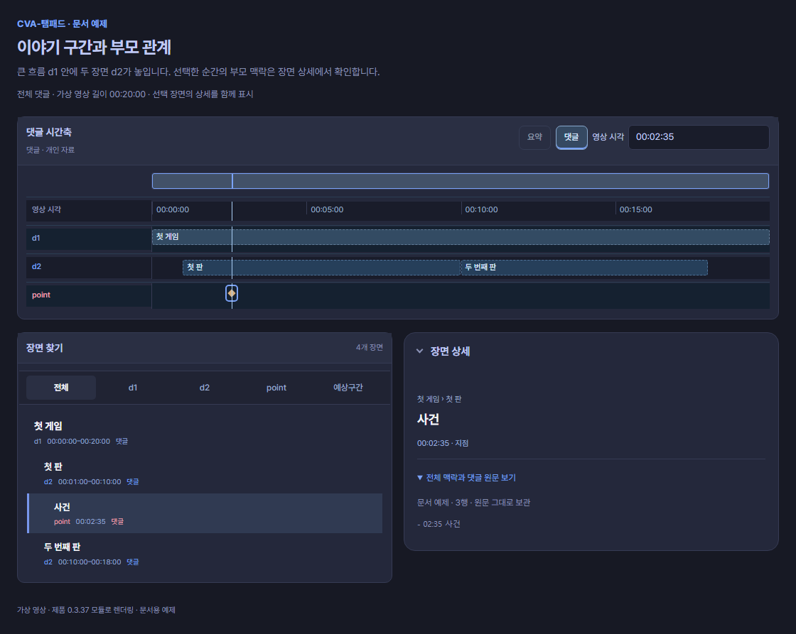
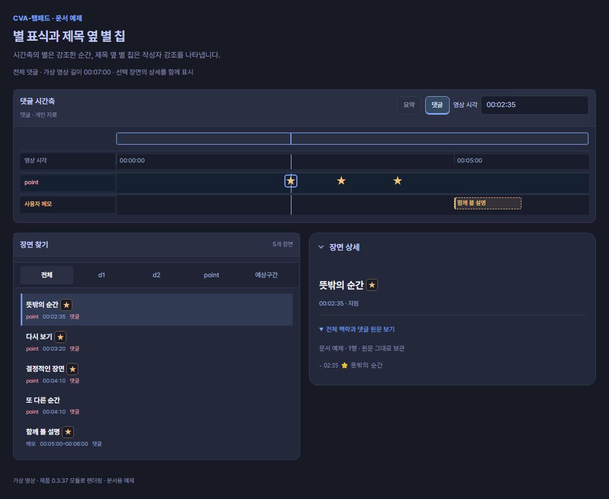
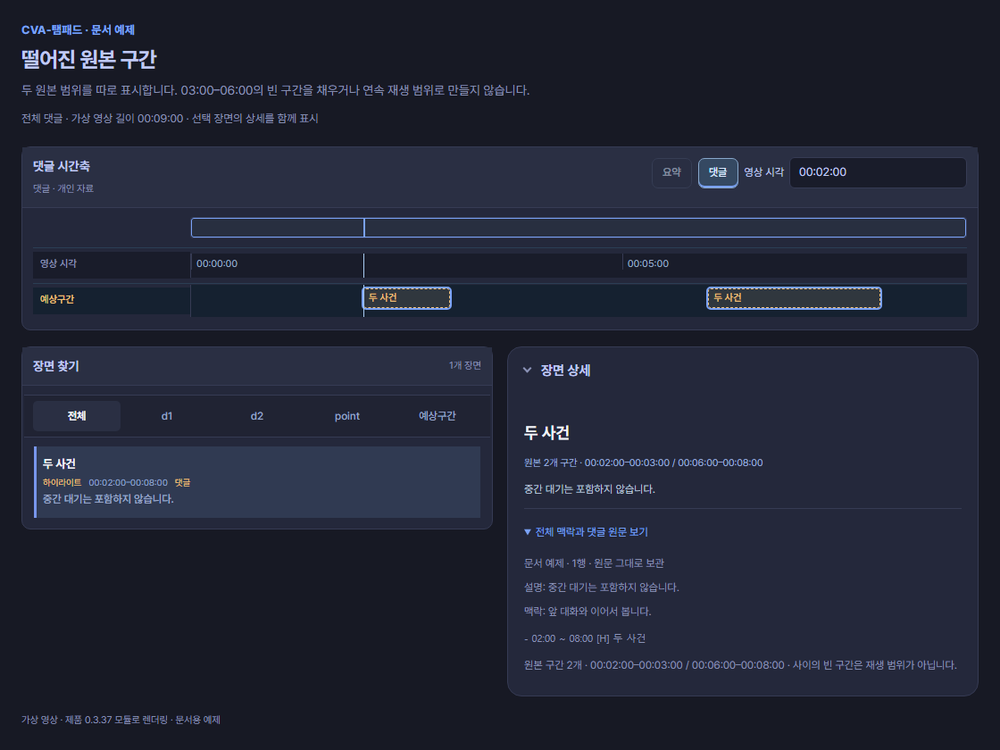

구간과 강조
순간은 한 지점, 구간은 시작부터 끝까지입니다. 여러 순간이 나란히 있다는 이유만으로 사이를 재생 범위로 채우지 않습니다.
같은 뜻으로 쓸 수 있는 표기
[M]과 [메모]는 같습니다. 짧은 영문 표기와 한글 표기를 편한 쪽으로 쓰세요.
| 뜻 | 지원 표기 | 적는 시각 |
|---|---|---|
| 순간 | [P], [포인트] 또는 태그 생략 | 시각 하나 |
| 메모 | [M], [메모] | 시각 하나 또는 시작·끝 |
| 먼저 볼 곳 | [W], [볼 곳], [먼저 보기] | 시각 하나 또는 시작·끝 |
| 하이라이트 | [H], [하이라이트] | 시작·끝 |
| 예상구간 | [H?], [예상] | 시작·끝 |
| 합방 구간 | [합방] | 시작·끝 |
영문 태그는 대소문자를 구분하지 않습니다. [m]도 메모입니다. [합방]은 구간의 종류, 합방: 이름 A, 이름 B는 참가자 명단입니다. 명단으로 비교 영상 찾기
순간과 명시 범위
- 02:35 다시 볼 순간
- 03:00 ~ 04:00 [M] 설명을 함께 보기
- 04:10 ~ 04:30 [H] 결정적인 장면
- 05:00 ~ 05:20 [H?] 검토할 후보
화면에서 읽기: 02:35는 point 하나입니다. 03:00–04:00은 사용자 메모, 04:10–04:30과 05:00–05:20은 예상구간 행의 범위입니다. [H?]는 검토 전 후보이며, 현재 행의 모양은 [H]와 같습니다. 선택한 항목의 전체 맥락과 댓글 원문 보기에서 [H?] 표기를 확인하세요. [H]도 승인된 컷을 뜻하지 않습니다.
끝은 시작보다 뒤여야 합니다. [P] 순간에는 끝을 붙이지 않습니다. 위 예제의 [M]은 [메모]로 바꿔도 같은 메모 구간입니다. [W], [볼 곳], [먼저 보기]도 서로 같은 표기입니다.
범위는 03:00 ~ 04:00, 03:00 - 04:00, 03:00 – 04:00, 03:00 — 04:00처럼 적을 수 있습니다. 기존 댓글의 03:00 ~ 04:00 설명처럼 종류를 생략한 범위는 메모 구간으로 읽습니다.
이야기 구간과 자동 끝
# 00:00 ~ 20:00 첫 게임
## 01:00 ~ 10:00 첫 판
- 02:35 사건
## 10:00 ~ 18:00 두 번째 판
화면에서 읽기: d1은 00:00–20:00의 큰 흐름입니다. d2는 01:00–10:00과 10:00–18:00의 두 장면이고, 02:35 사건은 첫 판 안의 point입니다. 이 예제의 끝은 원문에 명시되어 있습니다. 시작만 적은 경우는 자동 끝 비교에서 확인하세요.
제목 #부터 ######까지 깊이 1–6을 읽습니다. 바로 위 단계 부모가 있어야 합니다. 단계가 누락되면 부모 구간을 만들어 채우지 않습니다.
제목에 시작만 있으면 다음 같은 단계·상위 제목, 부모 끝, 확인된 영상 끝을 경계로 사용할 수 있습니다. 부분 본문·누락 경계·알 수 없는 길이에서는 끝이 미확정일 수 있습니다. 명시한 끝은 자동 계산으로 덮어쓰지 않습니다. 하위 구간이 부모 밖으로 나가거나 명시 구간이 겹치면 확인 안내를 남깁니다.
작성자 강조
- 02:35 ⭐ 뜻밖의 순간
- 03:20 ★ 다시 보기
- 04:10 BEST 결정적인 장면
- 04:10 또 다른 순간
- 05:00 ~ 06:00 [M] ⭐ 함께 볼 설명
⭐, ★, 독립된 BEST는 같은 작성자 강조입니다. 원래 항목의 종류에 따라 다음처럼 보입니다.
| 강조한 항목 | 시간축에서 보이는 모습 |
|---|---|
| point·한 시각의 메모 | 일반 표식 대신 ★ |
| 시작·끝이 있는 구간 | 금색 테두리와 왼쪽 선 |
| 가까워서 겹친 순간들 | 하나의 ★로 묶임. 올리면 개수, 누르면 항목 선택과 확대 |
| 장면 찾기·장면 상세 | 제목 옆 ★ 칩. 마우스를 올리면 작성자 강조 |
예제의 04:10 두 항목은 하나의 별로 묶이고, 05:00–06:00 메모는 금색 구간으로 표시됩니다. 별 사이를 구간으로 채우지 않습니다.
별표와 독립된 BEST는 작성자 강조입니다. 재미 점수·편집 승인·구간 역할과는 별개입니다. BESTiary 같은 단어는 강조가 아닙니다. 플랫폼 배지와 좋아요도 작성자의 문자 강조로 바꾸지 않습니다.
설명과 떨어진 원본 구간
- 02:00 ~ 08:00 [H] 두 사건
설명: 중간 대기는 포함하지 않습니다.
맥락: 앞 대화와 이어서 봅니다.
원본 구간: 02:00 ~ 03:00; 06:00 ~ 08:00
화면에서 읽기: 같은 항목이 02:00–03:00, 06:00–08:00의 두 막대로 표시됩니다. 가운데 03:00–06:00은 비어 있습니다. 항목의 바깥 범위와 실제 원본 구간을 구별하고, 설명·맥락도 함께 확인합니다.
설명은 직전 항목에 붙습니다. 떨어진 원본 구간은 정렬되고 겹치지 않으며 바깥 범위 안에 있어야 합니다. 03:00–06:00의 빈 부분을 재생 범위로 채우지 않습니다. 세부 원본 구간에는 소수점 아래 세 자리까지 시각을 적을 수 있습니다.
긴 댓글 나누기
긴 댓글은 항목과 주제·명단이 함께 남도록 나눕니다. 오류나 끝 미확정 안내가 있으면 먼저 확인하고 다시 시도하세요. 게시할 댓글의 길이는 실제 입력칸에서 확인하세요.